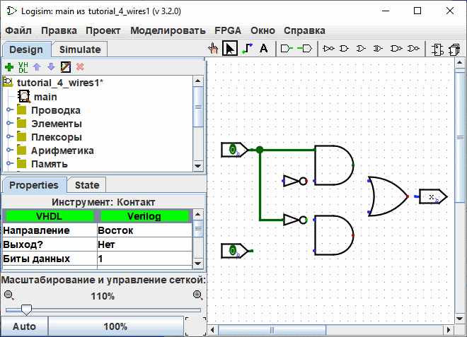
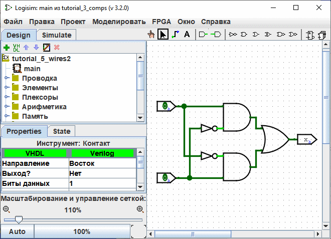

прецедент: Шаг 1: Добавление логических элементов
Шаг 2: Добавление проводов
После того, как все компоненты закреплены на холсте, вы готовы начать добавление проводов. Выберите Инструмент Правка ( ). Когда курсор над точкой, несущей провод, маленький зелёный кружок будет нарисован вокруг неё. кликнуть левой мыши на и перетащите туда, где вы хотите, чтобы был провод.
). Когда курсор над точкой, несущей провод, маленький зелёный кружок будет нарисован вокруг неё. кликнуть левой мыши на и перетащите туда, где вы хотите, чтобы был провод.

Logisim достаточно умён при добавлении проводов: каждый раз, когда провод кончается на другом проводе, Logisim автоматически соединяет их. Вы также можете "удлинить" или "укоротить" провод, перетаскивая один из его концов, используя Инструмент Правка ( ).
).
Провода в Logisim должны быть горизонтальными или вертикальными. Чтобы соединить верхний вход с элементом НЕ, а затем с элементом И, я добавил три разных провода.

Logisim автоматически подключает провода к элементам и друг к другу. Сюда относится и автоматическое рисование кружка на Т-образном соединении выше, указывающего, что провода соединены.
Когда вы рисуете провода, вы можете увидеть несколько синих или серых проводов. В Logisim синий показывает, что значение в этой точке "неизвестно", а серый показывает, что провод не подключен ни к чему. В этом нет ничего особенного, пока вы в процессе построения схемы. Но когда вы закончите, ни один из ваших проводов не должен быть синего или серого цвета. (Неприсоединённые ножки элемента ИЛИ останутся синими: это нормально.)
Если у вас есть синий или серый провод когда вы думаете, что всё уже соединено, значит что-то пошло не так. Важно, чтобы вы подключили провода к правильным местам. Logisim отрисовывает маленькие точки на компоненте, чтобы показать, куда подключать провода. Когда вы сделаете это, вы увидите, что точки стали из синих светло- или тёмно-зелёными.
После того как вы подключили все провода, все добавленные вами провода будут светло- или тёмно-зелёными.

Далее: Шаг 3: Добавление текста